-
ExpEYES-17
Perform over 70 different experiments
-
Mechanics Experiments
Studying the motion of a pendulum in real-time
-
Compact
Fully USB powered unit. Take it anywhere.
-
Quality Control
Machine assembled by state-of-the-art facilities
-
Workshops
Training workshops have been conducted all over the country and abroad
- A tool for learning science by exploring and experimenting.
- 50 documented experiments and easy to add more.
- Wide range: High school and above.
- 4 channel Oscilloscope, 1Msps, +/-16V input range. Programmable voltage ranges
- Sine/Triangular Wave Generator, 5Hz to 5kHz
- Programmable voltage sources, +/5V and +/-3.3V
- Frequency Counter and time measurements.
- Supports I2C standard sensors
- 12-bit analog resolution.
- Open Hardware and Free Software.
- Software in Python programming language.
- Requires USB port and Python
External Connections
The function of the external connections is briefly explained below. All the black coloured terminals are at ground potential,all other voltages are measured with respect to it.
Outputs
-
Constant Current Source(CSS) : the constant current source can be switched ON and OFF under software control. The nominal value is 1mA but may vary from unit to unit,due to component tolerances. To measure the exact value, connect an ammeter from CSS to GND. Another method is to connect a known resistance(~1K) and measure the voltage drop across it. The load resistor should be less than 3k for this current source.
-
Programmable Voltage : Can be set,from software, to any value in the -5V to +5V range.The resolution is 12 bits, implies a minimum voltage step of around 2.5 millivolts.
-
Square Wave Generator SQ1 : Output swings from 0 to 5 volts and frequency can be varied 4Hz to 100kHz. All intermediate values of frequency are not possible. The duty cycle of the output is programmable. Setting frequency to 0Hz will make the output HIGH and setting it to -1 will make it LOW, in both cases the wave generation is disabled. SQR1 output has a 100Ω series resistor inside so that it can drive LEDs directly.
-
Square Wave Generator SQ2 : Output swings from 0 to 5 volts and frequency can be varied from 4Hz to 100kHz. All intermediate values of frequency are not possible. The duty cycle of the output is programmable. SQR2 is not available when WG is active.
-
Digital Output (OD1) : The voltage at OD1 can be set to 0 or 5 volts using software.
-
Sine/Triangular Wave WG : Frequency can be varied from 1Hz to 5kHz. The peak value of the amplitude can be set to 3 volts, 1.65 volts or 150 mV. Shape of the waqveform output is programmable, using the GUI sine or triangular can be selected. WG bar is converted into WG.
Inputs
-
Capacitance meter IN1 : Capacitance connected between IN1 and ground can be measured. It works better for low capacitance values, upto 10 nanoFarads but it is possible to measure in micro farad range also.
-
Frequency Counter IN2: : Capable of measuring frequencies upto several Mega Hertz. Also works as an analog input in the 0 to 3.3 volts range.
-
Resistive Sensor Input(SEN) : This is mainly for sensors like Light Dependent Resistors,Thermistors,Photo-transistors etc.. SEN is connected to 3.3 volts through a 5.1kΩ resistor.
-
±16V Analog Inputs, A1 & A2 : Can measure voltage within ±16 volts range. The input voltage range can be selected from .5V to 16V fullscale. Voltage at these terminals can be displayed as a function of time, giving the functionality of a low frequency oscilloscope. The maximum sampling rate is 1Msps/channel. Both have an input impedance of 1MΩ.
-
±3.3V Analog Input A3 : Can measure voltage within ±3.3 volts range. The input can be amplified by connecting a resistor from Rg to ground, gain -1 + (Rg/10000). The input impedance of A3 is 10MΩ.
-
Microphone Input MIC : A condenser microphone can be connected to this terminal and the output can be captured.
-
12C Sensor Interface : The four connections(+5V, Ground,SCL and SDA) of the 8 terminal berg strip supports 12C sensors. The software is capable of recognizing a large variety of I2C sensors for measuring temparature, velocity, acceleration etc.. These are easily available in the market.
-
+/-6V / 10mA Power Supply : The VR+ and VR- are regulated power outputs. However,they can supply very little current, but good enough to power an Op-Amp.
#Example code to capture a trace and plot it
from expeyes import eyes17
p = eyes17.open()
#Fetch 1000 points from A1 with 1uS between each consecutive point
x,y = p.capture1('A1',1000,1)
from pylab import *
plot(x,y)
show()
- RC Circuit Transient response of RC circuits
- RLC Discharge Transient response of RLC circuits
- RLC steady state Steady state response of RLC circuits
- 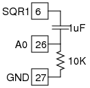 AC and DC Difference between AC and DC
- 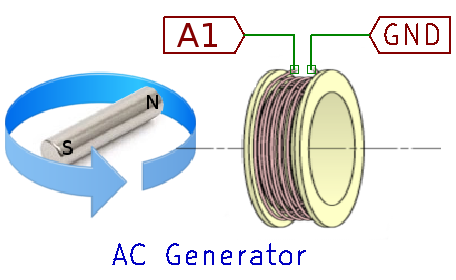 AC Generator Simple AC Generator
- 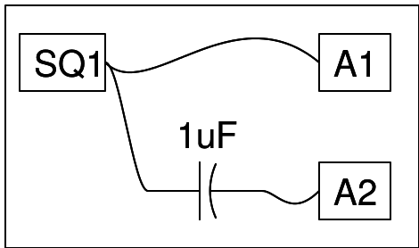 AC,DC separating Blocking the DC component of a waveform by using a capacitor
- 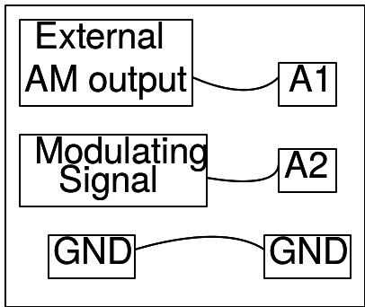 AM and FM modulation Capture the AM and FM signals and plot the power spectrum. Study sidebands in the AM signal
- 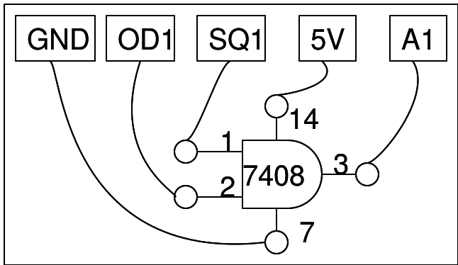 AND Gate Logic Gates : Study of AND gates
- Applist
- 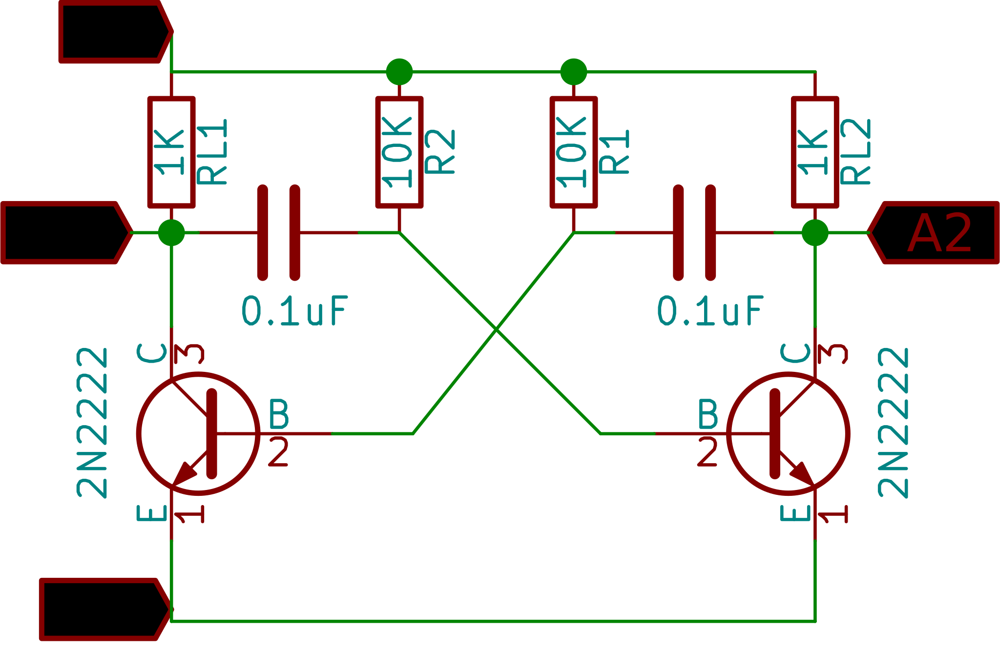 Astable Multivibrator Multivibrator circuit using a pair of transistors
-
 Capacitors - Advanced
Study the effect of combining capacitors in series or in parallel
Capacitors - Advanced
Study the effect of combining capacitors in series or in parallel
- 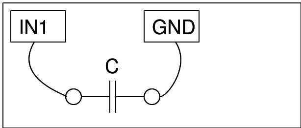 Measure Capacitance Measure the values of capacitors
- 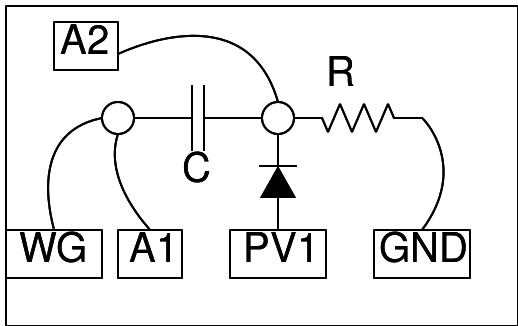 Diode Clamping Clamping waveforms with a diode and a voltage source. Adjust PV1 to change the clamping point
- 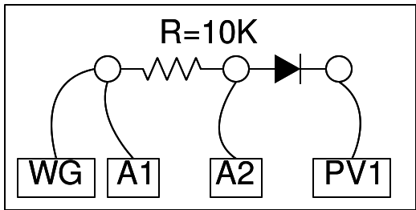 Diode Clipping Clipping waveforms with a diode and a voltage source
- 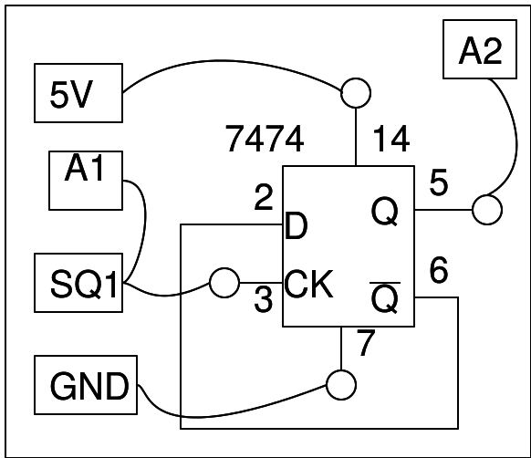 Clock divider Divide clock frequencies using flip flop
- 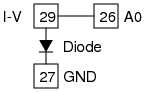 Diode IV Current-Voltage characteristics of PN junctions
- Driven Pendulum Study resonance phenomena by driving a simple pendulum with a matching frequency
- EM Induction Electromagnetic induction using solenoids
- 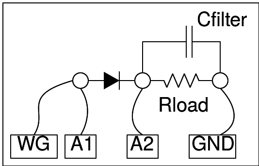 Half-wave Rectifier Study a half-wave rectifier
- IV Hysterisis Measure hysterisis in IV characteristics of devices like memristors
- Logic Gates Study Logic Gates
- 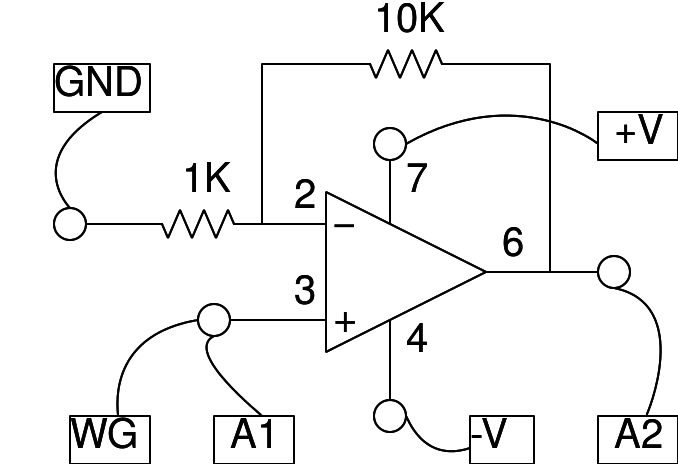 Op-Amp Circuits Circuits using operational amplifiers
- 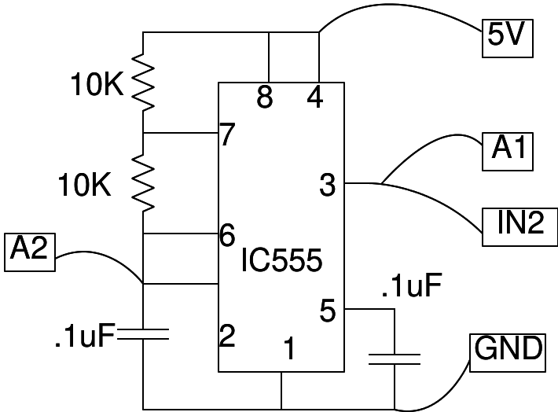 555 Oscillator Astable Multivibrator mode
- Piezo Response Frequency Response of piezo electric crystals
- 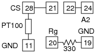 Temperature Sensors : Pt100 Obtain the cooling curve of water, and verify Newton's law of cooling
- 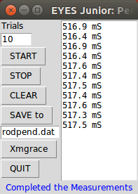 Rod Pendulum Measure the time period of oscillations of a physical pendulum
- 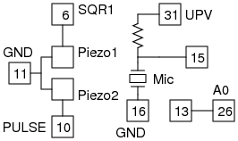 Sound Beats Study the interference of sound, and observe the beats phenomenon
- 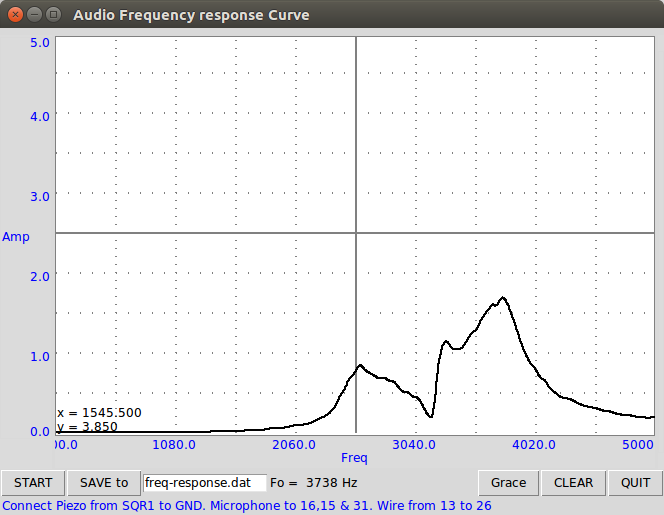 Velocity of Sound Study of the velocity of sound in air
- 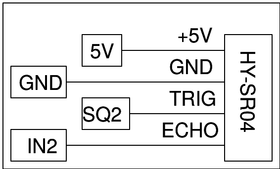 Ultrasound Echo Measure distance using an ultrasonic echo module
- 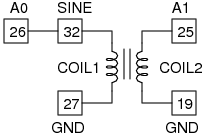 Transformer Mutual inductance and the effect of cores
- Resistance of water Measuring AC and DC resistance
- RL Circuits Transient response of RL circuits
- 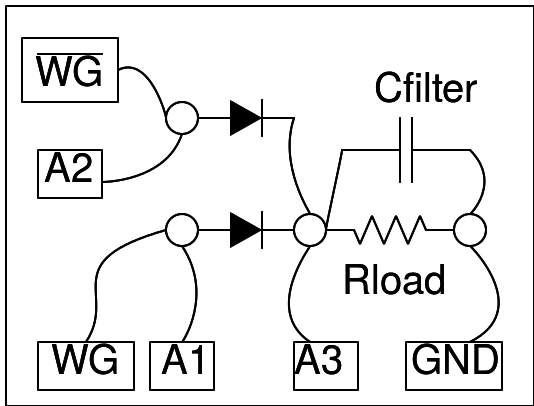 Full-wave rectifier Study a full-wave rectifier
- ExpEYES-17
-
 Pendulum waveform
Pendulum waveform : Digitization
Pendulum waveform
Pendulum waveform : Digitization
- Oscilloscope 1MSPS, 4-channel oscilloscope with trigger and analog gain
-
Sensor Logger Log data from I2C sensors
- Transistor CE Common Emitter characteristics of transistors
- 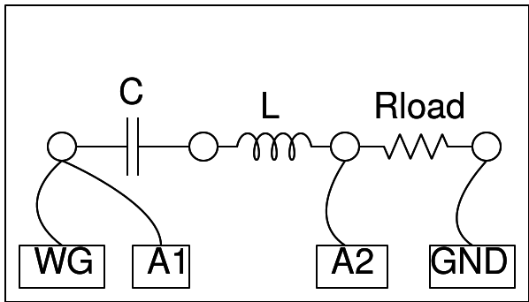 Filter Circuit
- Introduction Introduction to The Equipment
-
 Light Dependent Resistor
Output Characteristics of an LDR under different Light Sources
Light Dependent Resistor
Output Characteristics of an LDR under different Light Sources
- 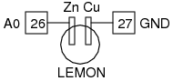 Lemon Cell
- 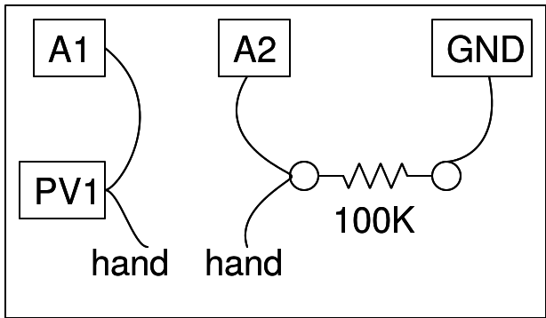 Resistance of Human Body Human Body resistance measurement
- 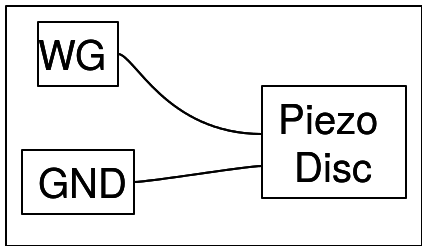 Sound Generator Observing resonance in a piezo disk
- 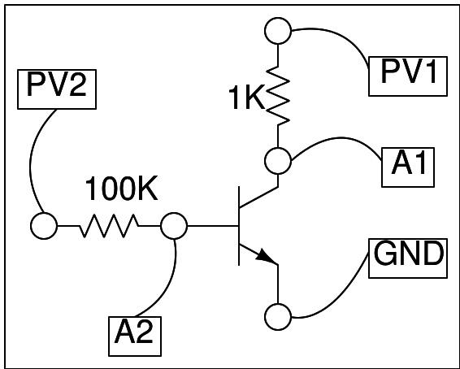 Transistor output Output Characteristics of transistors
-
 RC Steady State
RC Steady State
-
 RLC Steady State
RLC Steady State
- 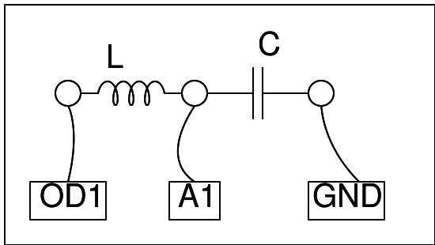 RLC Transient
-
 RL Transient
RL Transient
-
 Pendulum Velocity
Pendulum Velocity
- 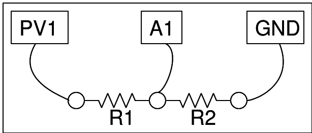 Resistance comparison
-
 Resistance Measurement
Measurement of Resistance
Resistance Measurement
Measurement of Resistance
- 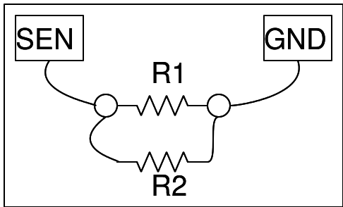 Resistance in Parallel Measurement of Resistance connected in Parallel
- 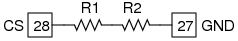 Resistance in Series Measurement of Resistance connected in Series
-
 Sound Capture
Sound Capture
- 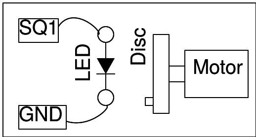 Stroboscope
Oscilloscope Utility Introduction: Click to play

An example experiment: RLC phase shifts

Directly record data from sensors
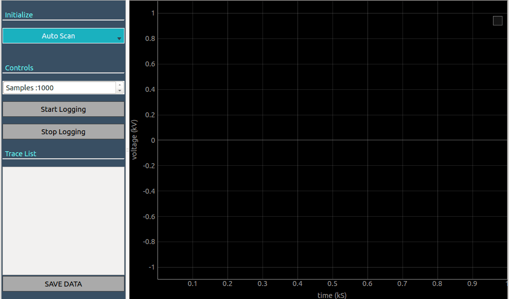